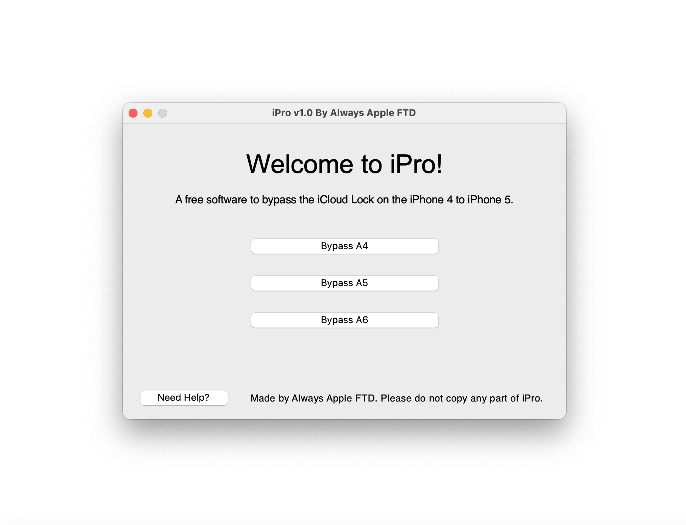

<!-- <!DOCTYPE html>
<html>
<head>
  <meta charset="UTF-8">
  <title>Always Apple FTD - iPro Beta Program</title>
  <link rel="stylesheet" type="text/css" href="style.css">
  <style>
    /* CSS for the iPro page */

    body {
      text-align: center;
      height: 100vh;
    }

    img {
      display: block;
      margin: 0 auto;
    }

    h1 {
     text-align: center;
     font-family: PT Sans Caption;
}
    h2 {
     text-align: center;
     font-family: PT Sans Caption;
     font-size: 10;
}
      
    #use_ipro h2 {
      text-align: center;
      font-family: PT Sans Caption;
      font-size: 10;
    }
    
    h3 {
     text-align: center;
     font-family: PT Sans Caption;
     font-size: 10;
}
    h4 {
     text-align: center;
     font-size: 10;
     font-family: Arial;
}
    p {
     text-align: center;
}

    .spacer {
      height: 50px;
    }
      
    .spacer2 {
      height: 15px;
    }
      
    .spacer3 {
      height: 5px;
    }

    .spacer p {
      font-size: 14px; /* Adjust the font size as needed */
    }
      
    li {
      color: #396104;
      font-family: Helvetica;
      font-size: 20px;
    }
      
    a {
      color: #3ea4f7;
      font-family: Helvetica;
      font-size: 20px;
    }

    .button {
      display: inline-block;
      padding: 15px 60px;
      background-color: #2a96fa;
      color: white;
      text-decoration: none;
      border-radius: 8px;
      font-size: 16px;
      border: none;
      transition: background-color 0.3s ease;
    }

    .button:hover {
      background-color: #0d69bf; /* Updated hover color */
    }
    .button2 {
      display: inline-block;
      padding: 10px 40px;
      background-color: #e3653b;
      color: white;
      text-decoration: none;
      border-radius: 8px;
      font-size: 16px;
      border: none;
      transition: background-color 0.3s ease;
    }

    .button2:hover {
      background-color: #a33612; /* Updated hover color */
    }
      
    .button3 {
      display: inline-block;
      padding: 10px 40px;
      background-color: #0fd18a;
      color: white;
      text-decoration: none;
      border-radius: 8px;
      font-size: 16px;
      border: none;
      transition: background-color 0.3s ease;
    }

    .button3:hover {
      background-color: #058053; /* Updated hover color */
    }
      
    .button4 {
      display: inline-block;
      padding: 10px 40px;
      background-color: #05a4e8;
      color: white;
      text-decoration: none;
      border-radius: 8px;
      font-size: 16px;
      border: none;
      transition: background-color 0.3s ease;
    }

    .button4:hover {
      background-color: #03638c; /* Updated hover color */
    }
    
  </style>
</head>
<body>
  
  <div class="navbar">
    <button class="tablinks" onclick="navigateToPage('index.html')">Home</button>
    <button class="tablinks" onclick="navigateToPage('news.html')">News</button>
    <button class="tablinks" onclick="navigateToPage('web_blog.html')">Web Blog</button>
    <button class="tablinks" onclick="navigateToPage('helpful_hacks.html')">Helpful Hacks</button>
    <button class="tablinks" onclick="navigateToPage('downloads.html')">Downloads</button>
    <button class="tablinks" onclick="navigateToPage('about.html')">About</button>
  </div>

  <script>
  function navigateToPage(pageUrl) {
    window.location = pageUrl;
  }
  </script>
  
  <script type="text/javascript">
      window.onload = function() {
          var userAgent = navigator.userAgent.toLowerCase();
          if (/iphone|ipad|ipod|android|blackberry|mini|windows\sce|palm/i.test(userAgent)) {
              window.location.href = "https://alwaysapplftd.000webhostapp.com/ipro_beta_program.html";
          }
      }
  </script>

    
    <div id="ipro_page">
    <h1>Welcome to the iPro Beta program.</h1>
    
    <div class="spacer2"></div>
    
    <h2>This is the official site for iPro, </h2>
    <h2>a free tool for iCloud bypass on the iPhone 4 to 5, and iPad 2 to 4</h2>
    
    
    <h2>Supported devices</h2>
    <li>iPhone 4 (All models supported, like iPhone 4 GSM, iPhone 4 CDMA etc.)</li>
    
    <div class="spacer2"></div>
    <li>iPhone 4s (Requires Special Hardware called Arduino Board)</li>
    
    <div class="spacer2"></div>
    <li>iPhone 5 (Requires Clean Restore before bypassing)</li>
    
    <div class="spacer2"></div>
    <li>iPhone 5c (Requires Clean Restore before bypassing)</li>
    
    <div class="spacer2"></div>
    <li>iPad 2 (Requires Special Hardware called Arduino Board)</li>
    
    <div class="spacer2"></div>
    <li>iPad 3 (Requires Special Hardware called Arduino Board)</li>
    
    <div class="spacer2"></div>
    <li>iPad 4 (Requires Clean Restore before bypassing)</li>
    
    <div class="spacer"></div>
    <div id="use_ipro">
        <h2>How to download iPro</h2>
    </div>
    <h4>Open the link below to download the latest beta version.</h4>
    <h4>Once you open the site, click on the blue download button to download.</h4>
    <a href="https://www.mediafire.com/file/79vjcegnt2qdrl0/iPro_v1.0_[BETA].zip/file" class="button">Download v1.2</a>
    <h1>How to use iPro</h1>
    <h4>[1] Open up a new Terminal window. Terminal can be found inside the "Other" folder in your Launchpad</h4>
    <h4>[2] Type "cd" without the quotes, all lowercase. </h4>
    <h4>Then drag and drop the iPro_v1.0_[BETA] folder you downloaded from the Download button above.</h4>
    <h4>Then press enter.</h4>
    <h4>[3] Type "./iPro" without the quotes, and and with the capital P after the lowercase i</h4>
    <h4>Wait a few seconds and the app should open up!</h4>
    <h4>Note: In step 3, you can also just type "./iP" without the quotes and with a capital P, then press the tab key on your keyboard to fill in the whole filename. </h4>
    <h4>This is just a shortcut to make it quicker.</h4>
    <h4>Now, select your device processor.</h4>
    <h4>    iPhone 4 is the A4 Devices button</h4>
    <h4>    iPhone 4s, iPad 2, and iPad 3 are the A5 Devices button</h4>
    <h4>    iPhone 5, iPhone 5c, and iPad 4 are the A6 Devices button.</h4>
    
    <h2>How to use iPro to bypass iPhone 4</h2>
        <h4>Bypassing the iPhone 4 is probably the simplist device to bypass.</h4>
        <h4>First, put your iPhone into DFU mode. </h4>
        <h4>If you don't know how, then Google "How to enter DFU mode on iPhone 4"</h4>
        <h4>Find a YouTube tutorial or blog post. There are lots of these around.</h4>
        <h4>Once done, select your model of iPhone 4.</h4>
        <h4>You can find out by looking up the model of your iPhone 4.</h4>
        <h4>Do this by checking the "Model" text on the glass back of your iPhone.</h4>
        <h4>If it says "A1332", then it's an iPhone 4 GSM or iPhone 4 Mid 2012. Press either buttons.</h4>
        <h4>If it says "A1349", then it's an iPhone 4 CDMA</h4>
        <h4>Once you have selected your model, press the "Enter PwnDFU mode" button in iPro.</h4>
        <h4>You will get a message with the status of the exploit.</h4>
        <h4>If it says "Failed" or "Error", then reboot your device out of DFU mode and re-enter DFU Mode.</h4>
        <h4>Then try again.</h4>
        <h4>If you see the success message, then move on to the next step.</h4>
        <h4>Click the "Load Ramdisk" button.</h4>
        <h4>After a few seconds, you will see your device dimly light up, then you will see some verbose text on the screen.</h4>
        <h4>Finally, the Apple logo will appear with a bar.</h4>
        <h4>Click the last button, which says "Delete Setup.app".</h4>
        <h4>This is the actual iCloud bypass!</h4>
        <h4>Wait for the device to reboot.</h4>
        <h4>If it doesn't, then please see the troubleshooting part at the end of this page.</h4>
        <h4>Congratulations! When the device boots up, then you will be on the Lock Screen!</h4>
    <h2>How to use iPro to bypass iPhone 4s, iPad 2, or iPad 3</h2>
        <h4>Bypassing the iPhone 4s, iPad 2, and iPad 3 is the hardest device to bypass.</h4>
        <h4>First, put your iPhone into DFU mode. </h4>
        <h4>If you don't know how, then Google "How to enter DFU mode on " and then your device model.</h4>
        <h4>Example might be "How to enter DFU mode on iPhone 4s".</h4>
        <h4>Find a YouTube tutorial or blog post. There are lots of these around.</h4>
        <h4>Once done, select your device model.</h4>
        <h4>If it's an iPad, then you can find out if it's a 2 or 3 by looking on the back of the device.</h4>
        <h4>Do this by checking the "Model" text on the metal or glass back of your device.</h4>
        <h4>If it says "A1395", "A1396", or "A1397", then it's an iPad 2.</h4>
        <h4>If it says "A1416", "A1430", or "A1403", then it's an iPad 3.</h4>
        <h4>Press whichever button matches your device.</h4>
        <h4>Once you have selected your model, press the "Enter PwnDFU mode" button in iPro.</h4>
        <h4>You will get a message saying that it will open a YouTube video on Pwning the device.</h4>
        <h4>This is because A5 devices (iPhone 4s, iPad 2, iPad 3) need some special hardware in order to pwn the device.</h4>
        <h4>This is called an Arduino Board.</h4>
        <h4>The YouTube video explains where to purchase it, and how to set it up.</h4>
        <h4>These steps end at the time 20:09.</h4>
        <h4>IMPORTANT NOTE: You can skip the downloading of the "Sliver" app in the video.</h4>
        <h4>ALSO NOTE: You will have to purchase the Arduino board and USB Host shield online. This is explained further in the video.</h4>
        <h4>If you'd like to watch the video without downloading the iPro app, here's the link:</h4>
        <a href="https://www.youtube.com/watch?v=lbVXHvrxhV0">YouTube video on A5 Device PwnDFU</a>
        <h4>Once everything is successful and you know you are in PwnDFU mode, click the "Load Ramdisk" button.</h4>
        <h4>After a few seconds, you will see your device dimly light up, then you will see some verbose text on the screen.</h4>
        <h4>Finally, the Apple logo will appear with a bar.</h4>
        <h4>Click the last button, which says "Delete Setup.app".</h4>
        <h4>This is the actual iCloud bypass!</h4>
        <h4>Wait for the device to reboot.</h4>
        <h4>If it doesn't, then please see the troubleshooting part at the end of this page.</h4>
        <h4>Congratulations! When the device boots up, then you will be on the Lock Screen!</h4>
    <h2>How to use iPro to bypass iPhone 5, iPhone 5c or iPad 4</h2>
        <h4>Bypassing the iPhone 5, iPhone 5c and iPad 4 requires some extra steps, but you can do everything without any additional hardware.</h4>
        <h4>First, put your iPhone into DFU mode. </h4>
        <h4>If you don't know how, then Google "How to enter DFU mode on " and then your device model.</h4>
        <h4>Example might be "How to enter DFU mode on iPhone 5".</h4>
        <h4>Find a YouTube tutorial or blog post. There are lots of these around.</h4>
        <h4>Now, open up Finder (or iTunes on macOS Mojave and earlier) and wait for it to detect your device in DFU mode.</h4>
        <h4>If it says " Device detected in Recovery mode" then that's fine as long as the screen is black.</h4>
        <h4>Click on "Restore iPhone" or "Restore iPad" depending on your device model.</h4>
        <h4>It will take a few minutes, because in most cases it will download the firmware file to your Mac first.</h4>
        <h4>Then, it will restore your device. But the next step is VERY important.</h4>
        <h4>Now, you will have to enter DFU mode RIGHT after the device boots up after the restore.</h4>
        <h4>So wait for Finder or iTunes to say it was restored, then wait to see the Apple logo, then IMEDIATELY enter DFU mode.</h4>
        <h4>DO NOT wait for the second bar after the restore to complete!</h4>
        <h4>Also you might want to practice entering DFU mode when it's not restoring so you can get it right.</h4>
        <h4>There's absolutly no pressure, as if you don't make it in time, all you have to do is basically restore the device again.</h4>
        <h4>This is time consuming though, so the process will be slower if you miss the timing.</h4>
        <h4>Once in DFU mode after the restore, but beforw the first boot, then go back into iPro.</h4>
        <h4>You can also identify if your device is an iPhone 5 or 5c in case you don't know.</h4>
        <h4>iPhone 5c's were colorful, and came in red, yellow, blue, green and white.</h4>
        <h4>They also always have plastic backs.</h4>
        <h4>iPhone 5's have metal backs. They only come in black and silver metal backs.</h4>
        <h4>Press whichever button matches your device.</h4>
        <h4>Once you have selected your model, press the "Enter PwnDFU mode" button in iPro.</h4>
        <h4>You will get a message with the status of the exploit.</h4>
        <h4>If it says "Failed" or "Error", then reboot your device out of DFU mode and re-enter DFU Mode.</h4>
        <h4>Then try again.</h4>
        <h4>If you see the success message, then move on to the next step.</h4>
        <h4>Click the "Load Ramdisk" button.</h4>
        <h4>After a few seconds, you will see your device dimly light up, then you will see some verbose text on the screen.</h4>
        <h4>Finally, the Apple logo will appear with a bar.</h4>
        <h4>Click the last button, which says "Delete Setup.app".</h4>
        <h4>This is the actual iCloud bypass!</h4>
        <h4>Wait for the device to reboot.</h4>
        <h4>If it doesn't, then please see the troubleshooting part at the end of this page.</h4>
        <h4>Congratulations! When the device boots up, then you will be on the Lock Screen!</h4>
    
    <h1>Part 3: Troubleshooting</h1>
        <h4>If your device is not booting the ramdisk, not rebooting after the iCloud bypass, or not entering PwnDFU mode after 15 times, then please read this.</h4>
        <h4>The best option is to contact me.</h4>
            <h4>In the future, I may provide a guide to troubleshooting.</h4>
            <h4>But because this is a beta, I highly recommand reaching out.</h4>
        <h4>I'm always looking to improve my tools, and I also am looking for feedback on using iPro.</h4>
        <h4>I want to make iPro the best it can be before the final release, so please message me with any concerns or bugs in the software.</h4>
            
            <div class="spacer3"></div>
        <a href="mailto:alwaysappleftd@icloud.com?subject=Feedback%20for%20iPro" class="button2">Contact Always Apple FTD via Email</a>
        
        <div class="spacer2"></div>
        <a href="https://instagram.com/finn.desilva" class="button3">Contact Always Apple FTD via Instagram</a>
        
        <div class="spacer2"></div>
        <a href="https://twitter.com/AlwaysAppleFTD" class="button4">Contact Always Apple FTD via X (Twitter)</a>
        
        <div class="spacer2"></div>
      
    <h1>Hope you enjoy the software!</h1>
   
    <div class="spacer"></div>
  </div>
    <p>Website made by Always Apple FTD. Please do not copy any part of this website.</p>
</body>
</html>
-->
